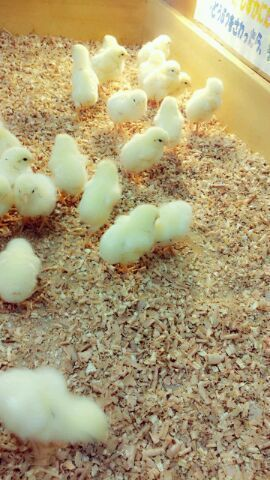
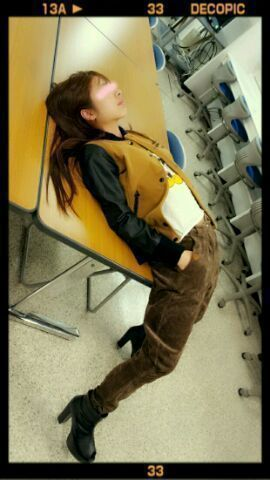

こんばんわぁ〜(★・∀・/) /
ろってぃ-だよお♪
個人PV お題は「苦手克服★」
まひろの見てくださった
人ぉーー(・∀・)☆キラーン?
まひろは動物が大好きだから
「動物を苦手なふりをする。」
・・・・
なんか 、ちょっと
みんなとちゃうよねえ 笑(´・ω・)?
でもまあ、
苦手克服やから
皆やりたくないこと
やってきたとゆうこと。
それは同じ...
確かに本間
心痛みました (´・_・)
動物の皆ごめんなさい。
あんな態度とって...
ちゃんと謝ったけど
動物さんたちにちゃんと
気持ち伝わったんか
今でも考えちゃう(´Л`)
動物園で働いていた
作業員さんもごめんなさい。
動物園で働いてる人は
人一倍 動物さんたちのことを
愛してる方々なのに...
ぁあ....
内心こんなテンションで
たくさんしゃべってるところって
今までの個人PVやTV等でも
皆様もお見せしたことないと
思うので、
まだ発売はしていないけど
ショートバージョンは
公式ホームページの方から
みれるので
是非 チェックお願いします♪
ヒヨコめっちゃ
かわいいぃ〜(〃ω〃)
見てるだけで
癒されましたぁぁ (〃ω〃)
まひろのヒヨコの落書きは
気にしないでねん ♪))るん
うわぁ〜い 〃▽〃

そして、今日は
大好きなカフェに
行ってきました*^^*
カフェに行くことが
実は大好きでね...
時間が空いてる時は
いつも１人でまったり
してます(´ω`))
おすすめのところとかって
ありますかぁ?
まひろ どちらかとゆーと
チャレンジャーの方だから
食べたことないものとか
よく分からないものとか
頼んぢゃう方です (*^^*)
今日食べたパスタ
めちゃうまだったぁ〜*´ω`*
てな感じで...
さらばぢゃっ ★☆★
のし ! ! 。
